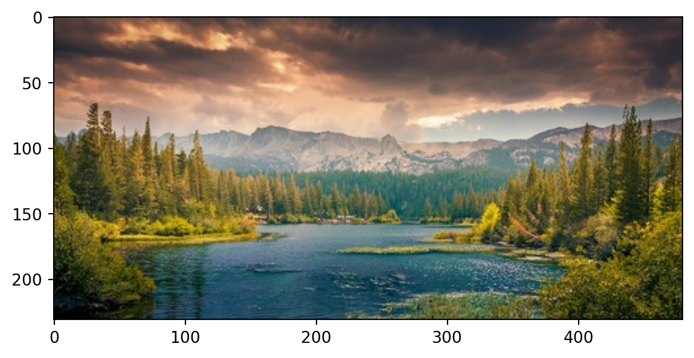
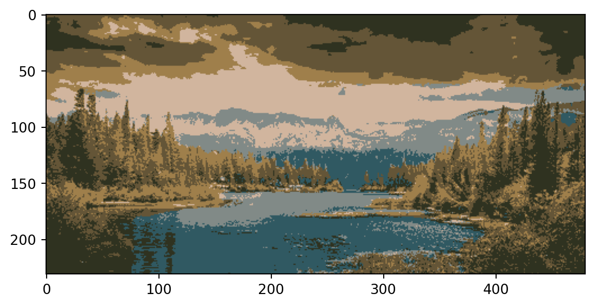
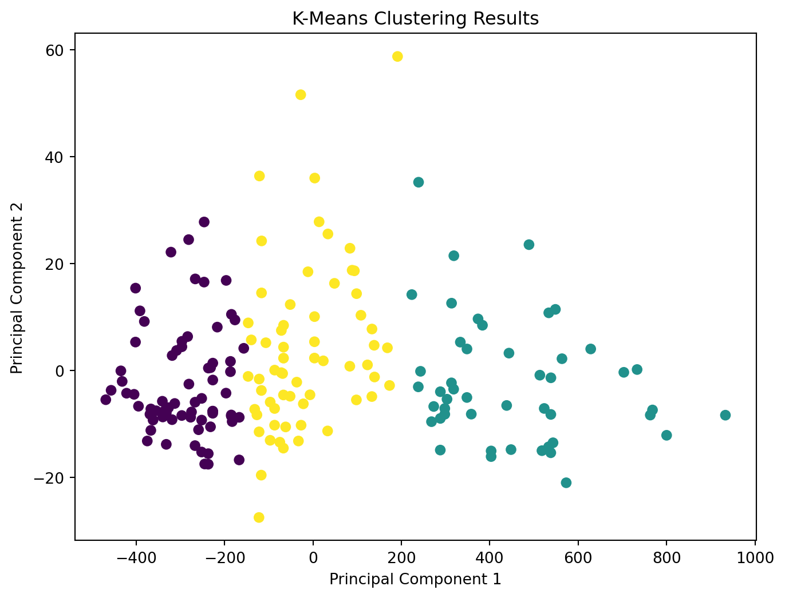
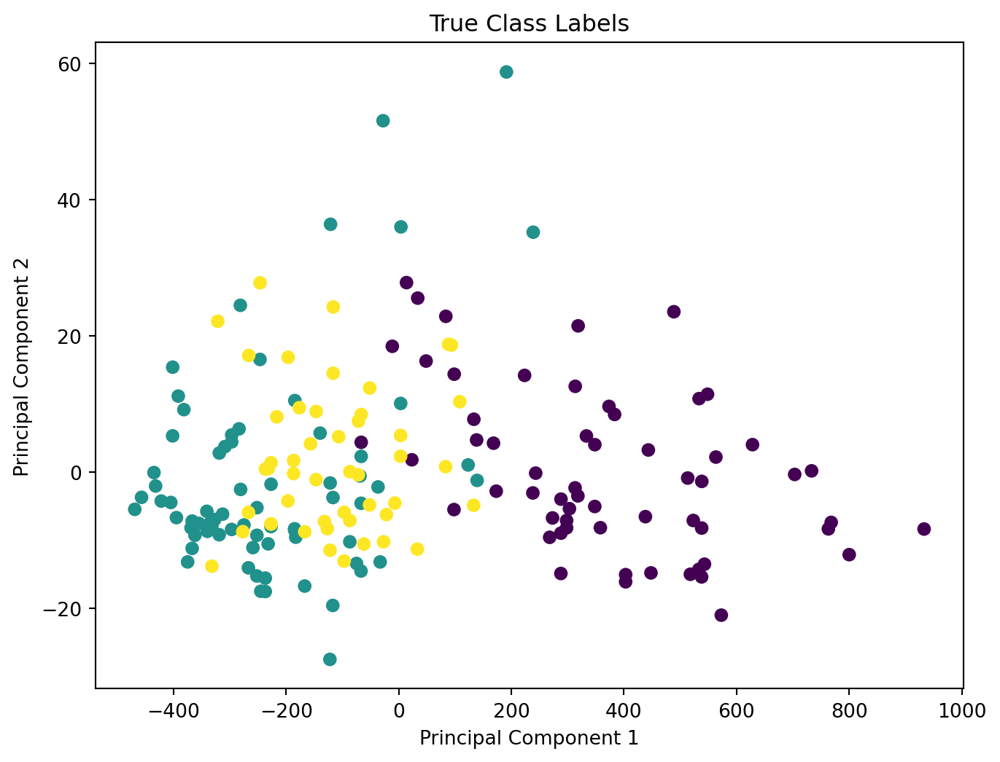
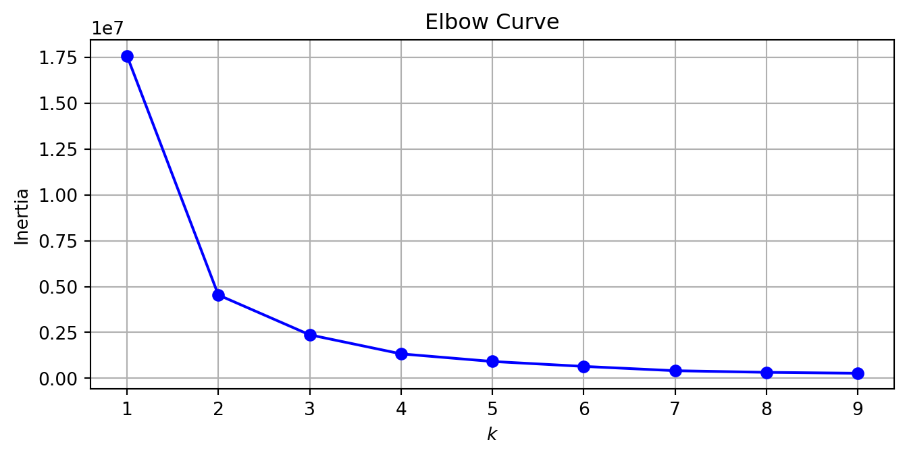

This blog post demonstrates the concept of clustering in machine learning.
Clustering
code
Author
Jonathan West
Published
November 22, 2023
Introduction
Clustering is an essential technique in machine learning and data analytics which involves grouping similar observations together into clusters. The process is essential for finding patterns in data and is used in a variety of fields. It is an unsupervised learning technique, meaning that it does not require labeled data, but rather finds patterns in the data itself.
Today we will be demonstrating use of a couple different clustering algorithms.
K-Means
K-Means clustering is a clustering algorithm which aims to partition “n” observations into “k” different groups. As the name suggests, the grouping of each observation is determined by mean of the cluster. Essentially, the algorithm finds the mean of each cluster and assigns each observation to the cluster with the nearest mean, repeatedly recomputing the means until the clusters no longer change.
Lets exemplify this process with a fun example. We are going to use the K-Means algorithm to group the colors of an image into clusters. First, lets load an image.
import numpy as npimport matplotlib.pyplot as pltimport cv2# Read in the image, convert to RGBimage = cv2.imread('landscape.jpg')image = cv2.cvtColor(image, cv2.COLOR_BGR2RGB)# Reshaping the image into a 2D array of pixels and 3 float values (RGB)pixels = image.reshape((-1,3))pixels = np.float32(pixels)# Display imageplt.imshow(image)
<matplotlib.image.AxesImage at 0x7f0fc556bf90>

This image is a matrix of pixels, where the pixels are represented by values that give their color based on the values of Red, Green, and Blue. Therefore each pixel can be considered as a point in a 3D color space, and we can use the K-Means algorithm to group the pixels in this space. To be specific, each pixel will be grouped with the cluster whose mean is closest to the pixel’s color, and these means will be updated until the clusters no longer change.
Then, we can display the image with each pixel represented by the mean color of its cluster.
# run k-means with random initial centers, k=3 clusters, stopping at 100 iterations or an epsilon value of 90%k =6criteria = (cv2.TERM_CRITERIA_EPS + cv2.TERM_CRITERIA_MAX_ITER, 100, 0.9)retval, labels, centers = cv2.kmeans(pixels, k, None, criteria, 10, cv2.KMEANS_RANDOM_CENTERS)# convert data into 8-bit values, and reshape to original image dimensionscenters = np.uint8(centers)segmented_data = centers[labels.flatten()]segmented_image = segmented_data.reshape((image.shape))# Display modified image plt.imshow(segmented_image)
<matplotlib.image.AxesImage at 0x7f0fc4026650>

Here we can see the image after having run the K-Means algorithm with K=6 clusters. You can probably think of some use cases for this, such as image compression, a stylistic effect, or simplifying an image for computer vision work or other analysis.
To further illustrate how k-means works, lets manually implement the algorithm on this data. Essentially we will be doing the same thing that the above code does: we initialize “k” different cluster centroids, assign each point to the cluster with the closest centroid, and then update the centroids to be the mean of the points in each cluster. We will keep repeating this process until the centroids no longer change between iterations. We start by initializing the centroids to random points in the color space. In practice we may want to ensure that the centroids are initialized to be far apart from each other or randomly sample existing colors in the image, but for simplicity we will just initialize them randomly. We also create a labels array to keep track of which cluster each pixel belongs to.
import randomk =4# Random number between 0 and 255:num = random.randint(0, 255)means = np.array([[random.randint(0, 255) for _ inrange(3)] for _ inrange(k)])print(means)labels = np.zeros(pixels.shape[0], dtype=np.uint8)print(pixels.shape)print(labels.shape)
Next, let’s make a quick helper method that will reobtain the image from the pixels array and current cluster means.
def get_image(pixels, means): new_pixels = np.zeros(pixels.shape, dtype=np.uint8)for i, px inenumerate(pixels): new_pixels[i] = means[labels[i]] new_image = new_pixels.reshape((image.shape))return new_imageinit_image = get_image(pixels, means) # image with initial random means
Now, we will implement the main program loop. For the sake of simplicity we will simply run 8 iterations, but in practice we would want to run until the centroids no longer change, or a certain epsilon value is reached.
# Iterate over all pixels and assign them to the closest clusteridx =0while idx <8:# Iterate over all pixels and update their cluster assignmentsfor i, px inenumerate(pixels):# Compute euclidian distance (the l2 norm) to each cluster mean distances = [np.linalg.norm(px - mean) for mean in means]# New cluster is the one with the smallest distance cluster = np.argmin(distances) labels[i] = clusterif idx ==0: init_image = get_image(pixels, means)elif idx ==1: image_1_iter = get_image(pixels, means)if idx ==3: image_3_iter = get_image(pixels, means)# Update cluster means# find average of all pixels from "pixels" where the label corresponds to the current cluster mean old_means = np.copy(means)for i inrange(k): means[i] = np.mean(pixels[labels == i], axis=0)# Compute difference between current and previous cluster means idx +=1print(means)
Finally, let’s display the image results. We can display the image with each pixel represented by the mean color of its cluster, and show how the means changed over 0, 10, 50 and 100 iterations.
Now let’s consider a more practical dataset for clustering. We are going to look at the scikit learn wine dataset, and work to cluster the wine samples into groups based on their features.
The dataset contains 13 features, and the target class includes 3 different types of wine. Note that because this data is not 2-dimensional, we will need to use a dimensionality reduction technique to visualize the clusters in a 2D plot. Specifically, we will use PCA, or principle component analysis, to reduce the dimensionality of the data to 2D.
# Apply PCA for dimensionality reduction, so we can visualize data with 2D graphpca = PCA(n_components=2)X_pca = pca.fit_transform(X)# Perform k-means clusteringn_clusters =3# You can change the number of clusters as neededkmeans = KMeans(n_clusters=n_clusters, random_state=0)kmeans.fit(X)# Get cluster labels and cluster centerslabels = kmeans.labels_centers = kmeans.cluster_centers_plt.figure(figsize=(8, 6))# Plot the data points colored by the cluster labelsplt.scatter(X_pca[:, 0], X_pca[:, 1], c=labels, cmap='viridis')plt.title('K-Means Clustering Results')plt.xlabel('Principal Component 1')plt.ylabel('Principal Component 2')plt.show()
/home/jrgw/CS5805_ML/blogposts/blogwork/jrgwblog/venv/lib/python3.11/site-packages/sklearn/cluster/_kmeans.py:1416: FutureWarning: The default value of `n_init` will change from 10 to 'auto' in 1.4. Set the value of `n_init` explicitly to suppress the warning
super()._check_params_vs_input(X, default_n_init=10)

As we did before, we ran k-means clustering on the data, this time with k=3 clusters. To plot the results we used principle component analysis (PCA) to reduce the dimensionality of the data to 2D, so we could visualize the clusters in a scatter plot.
Next, lets plot the data with the three true classification labels they were provided with in the dataset, to compare to the unsupervised learning groups.
plt.figure(figsize=(8, 6))# Plot the data points colored by the true class labelsplt.scatter(X_pca[:, 0], X_pca[:, 1], c=y_true, cmap='viridis')plt.title('True Class Labels')plt.xlabel('Principal Component 1')plt.ylabel('Principal Component 2')plt.show()

As we can see from comparing the two graphs, the clusters found by the k-means algorithm are comparable to the true class labels, but not quite the same. Next, lets consider how the choice of K affects our results. In this particular case, we know that there are three true wine classes, so we would expect that the best choice of K would be 3. However in practice the number of classes based on what we are trying to accomplish may not be known, so we may need to experiment with different values of K to find the best one.
With the k-means algorithm, “inertia” is a measure that quantifies the compactness or tightness of the clusters. It calculates the sum of the squared distances between each data point and its corresponding centroid in its cluster. Inertia allows us to assess how well the data points are grouped into clusters, because lower inertia values indicate less distance from points to their cluster centroids, and therefore the clusters are more compact.
kmeans_per_k = [KMeans(n_clusters=k, n_init=10, random_state=42).fit(wine.data) for k inrange(1, 10)]inertias = [model.inertia_ for model in kmeans_per_k]plt.figure(figsize=(8, 3.5))plt.plot(range(1, 10), inertias, "bo-")plt.title("Elbow Curve")plt.xlabel("$k$")plt.ylabel("Inertia")plt.grid()plt.show()

We call this graph an “Elbow Curve”, because the optimal value of K is often the point where the inertia curve has an “elbow” or sharp turn. As you can see, as our choice of k increases, the inertia decreases because more data points allow us to have more compact clusters. This will be true all the way until we reach k=n observations, where each observation is its own cluster and the inertia is 0. However, as you may have realized, this is not a good choice of k because it does not allow us to group similar observations together. The optimal value of k is the point where the inertia curve has an “elbow” or sharp turn, because this is the point where the inertia decreases more slowly as k increases, and therefore the point where the clusters are most compact, while still meaningfully grouping the data.
In this case, it appears that the optimal value of k is 2 rather than the 3 true classes, because the inertia curve has a sharp turn at k=2, and then decreases more slowly as k increases. This may be due to the particular criteria of wine classes not perfectly matching the wine features that we are grouping based on, or it may be due to the fact that the wine classes are not perfectly distinct from each other. In practice, if we did not have the true class labels, then we would likely choose k=2 in this case.
Conclusion
In this blog post, we have jumped into the concept of clustering in machine learning, which involves using unsupervised learning to find patterns and groups in unlabeled data. We discussed k-means and how to implement it, and why it is used. By understanding the concept of inertia and its pivotal role in k-means optimization, we gained insights into how to best make use of it. Clustering is an essential technique with diverse applications, allowing us to extract meaningful patterns and structures from complex datasets, making it an essential tool in a machine learning practitioner’s toolbox. Hopefully you can use this blog as an inspiration to explore clustering further, for example by trying other clustering algorithms such as DBSCAN or Gaussian Mixture Models, or by applying clustering to your own datasets.
---title: "Clustering"author: "Jonathan West"date: "2023-11-22"categories: [Clustering, code]description: "This blog post demonstrates the concept of clustering in machine learning."image: "clustering.png"format: html: code-tools: true---## IntroductionClustering is an essential technique in machine learning and data analytics which involves grouping similar observations together into clusters. The process is essential for finding patterns in data and is used in a variety of fields. It is an unsupervised learning technique, meaning that it does not require labeled data, but rather finds patterns in the data itself. Today we will be demonstrating use of a couple different clustering algorithms.## K-MeansK-Means clustering is a clustering algorithm which aims to partition "n" observations into "k" different groups. As the name suggests, the grouping of each observation is determined by mean of the cluster. Essentially, the algorithm finds the mean of each cluster and assigns each observation to the cluster with the nearest mean, repeatedly recomputing the means until the clusters no longer change.Lets exemplify this process with a fun example. We are going to use the K-Means algorithm to group the colors of an image into clusters. First, lets load an image.```{python}import numpy as npimport matplotlib.pyplot as pltimport cv2# Read in the image, convert to RGBimage = cv2.imread('landscape.jpg')image = cv2.cvtColor(image, cv2.COLOR_BGR2RGB)# Reshaping the image into a 2D array of pixels and 3 float values (RGB)pixels = image.reshape((-1,3))pixels = np.float32(pixels)# Display imageplt.imshow(image)```This image is a matrix of pixels, where the pixels are represented by values that give their color based on the values of Red, Green, and Blue. Therefore each pixel can be considered as a point in a 3D color space, and we can use the K-Means algorithm to group the pixels in this space.To be specific, each pixel will be grouped with the cluster whose mean is closest to the pixel's color, and these means will be updated until the clusters no longer change.Then, we can display the image with each pixel represented by the mean color of its cluster.```{python}# run k-means with random initial centers, k=3 clusters, stopping at 100 iterations or an epsilon value of 90%k =6criteria = (cv2.TERM_CRITERIA_EPS + cv2.TERM_CRITERIA_MAX_ITER, 100, 0.9)retval, labels, centers = cv2.kmeans(pixels, k, None, criteria, 10, cv2.KMEANS_RANDOM_CENTERS)# convert data into 8-bit values, and reshape to original image dimensionscenters = np.uint8(centers)segmented_data = centers[labels.flatten()]segmented_image = segmented_data.reshape((image.shape))# Display modified image plt.imshow(segmented_image)```Here we can see the image after having run the K-Means algorithm with K=6 clusters. You can probably think of some use cases for this, such as image compression, a stylistic effect, or simplifying an image for computer vision work or other analysis.To further illustrate how k-means works, lets manually implement the algorithm on this data. Essentially we will be doing the same thing that the above code does: we initialize "k" different cluster centroids, assign each point to the cluster with the closest centroid, and then update the centroids to be the mean of the points in each cluster. We will keep repeating this process until the centroids no longer change between iterations. We start by initializing the centroids to random points in the color space. In practice we may want to ensure that the centroids are initialized to be far apart from each other or randomly sample existing colors in the image, but for simplicity we will just initialize them randomly. We also create a labels array to keep track of which cluster each pixel belongs to.```{python}import random# Set seed for reproducibilityrandom.seed(42)k =4# Random number between 0 and 255:num = random.randint(0, 255)means = np.array([[random.randint(0, 255) for _ inrange(3)] for _ inrange(k)])print(means)labels = np.zeros(pixels.shape[0], dtype=np.uint8)print(pixels.shape)print(labels.shape)```Next, let's make a quick helper method that will reobtain the image from the pixels array and current cluster means.```{python}def get_image(pixels, means): new_pixels = np.zeros(pixels.shape, dtype=np.uint8)for i, px inenumerate(pixels): new_pixels[i] = means[labels[i]] new_image = new_pixels.reshape((image.shape))return new_imageinit_image = get_image(pixels, means) # image with initial random means```Now, we will implement the main program loop. For the sake of simplicity we will simply run 8 iterations, but in practice we would want to run until the centroids no longer change, or a certain epsilon value is reached.```{python}# Iterate over all pixels and assign them to the closest clusteridx =0while idx <8:# Iterate over all pixels and update their cluster assignmentsfor i, px inenumerate(pixels):# Compute euclidian distance (the l2 norm) to each cluster mean distances = [np.linalg.norm(px - mean) for mean in means]# New cluster is the one with the smallest distance cluster = np.argmin(distances) labels[i] = clusterif idx ==0: init_image = get_image(pixels, means)elif idx ==1: image_1_iter = get_image(pixels, means)if idx ==3: image_3_iter = get_image(pixels, means)# Update cluster means# find average of all pixels from "pixels" where the label corresponds to the current cluster mean old_means = np.copy(means)for i inrange(k): means[i] = np.mean(pixels[labels == i], axis=0)# Compute difference between current and previous cluster means idx +=1print(means)```Finally, let's display the image results. We can display the image with each pixel represented by the mean color of its cluster, and show how the means changed over 0, 10, 50 and 100 iterations.```{python}final_image = get_image(pixels, means)fig = plt.figure(figsize=(8, 8))columns =2rows =2fig.add_subplot(rows, columns, 1, title="Initial Clusters")plt.imshow(init_image)fig.add_subplot(rows, columns, 2, title="After 1 Iteration")plt.imshow(image_1_iter)fig.add_subplot(rows, columns, 3, title="After 3 Iterations")plt.imshow(image_3_iter)fig.add_subplot(rows, columns, 4, title="Final Clusters")plt.imshow(final_image)plt.show()```Now let's consider a more practical dataset for clustering. We are going to look at the scikit learn wine dataset, and work to cluster the wine samples into groups based on their features.```{python}from sklearn.datasets import load_winefrom sklearn.cluster import KMeansfrom sklearn.decomposition import PCA# Load the Wine datasetwine = load_wine()X = wine.datay_true = wine.target # True class labelsprint("Wine Dataset:")print(f"{len(wine.target_names)} Target names: {', '.join(wine.target_names)}")print(f"{len(wine.feature_names)} Feature names: {', '.join(wine.feature_names)}")print(f"Data shape: {wine.data.shape}")print(wine.data[:5])```The dataset contains 13 features, and the target class includes 3 different types of wine.Note that because this data is not 2-dimensional, we will need to use a dimensionality reduction technique to visualize the clusters in a 2D plot. Specifically, we will use PCA, or principle component analysis, to reduce the dimensionality of the data to 2D.```{python}# Apply PCA for dimensionality reduction, so we can visualize data with 2D graphpca = PCA(n_components=2)X_pca = pca.fit_transform(X)# Perform k-means clusteringn_clusters =3# You can change the number of clusters as neededkmeans = KMeans(n_clusters=n_clusters, random_state=0)kmeans.fit(X)# Get cluster labels and cluster centerslabels = kmeans.labels_centers = kmeans.cluster_centers_plt.figure(figsize=(8, 6))# Plot the data points colored by the cluster labelsplt.scatter(X_pca[:, 0], X_pca[:, 1], c=labels, cmap='viridis')plt.title('K-Means Clustering Results')plt.xlabel('Principal Component 1')plt.ylabel('Principal Component 2')plt.show()```As we did before, we ran k-means clustering on the data, this time with k=3 clusters. To plot the results we used principle component analysis (PCA) to reduce the dimensionality of the data to 2D, so we could visualize the clusters in a scatter plot.Next, lets plot the data with the three true classification labels they were provided with in the dataset, to compare to the unsupervised learning groups.```{python}plt.figure(figsize=(8, 6))# Plot the data points colored by the true class labelsplt.scatter(X_pca[:, 0], X_pca[:, 1], c=y_true, cmap='viridis')plt.title('True Class Labels')plt.xlabel('Principal Component 1')plt.ylabel('Principal Component 2')plt.show()```As we can see from comparing the two graphs, the clusters found by the k-means algorithm are comparable to the true class labels, but not quite the same.Next, lets consider how the choice of K affects our results. In this particular case, we know that there are three true wine classes, so we would expect that the best choice of K would be 3.However in practice the number of classes based on what we are trying to accomplish may not be known, so we may need to experiment with different values of K to find the best one.With the k-means algorithm, "inertia" is a measure that quantifies the compactness or tightness of the clusters. It calculates the sum of the squared distances between each data point and its corresponding centroid in its cluster. Inertia allows us to assess how well the data points are grouped into clusters, because lower inertia values indicate less distance from points to their cluster centroids, and therefore the clusters are more compact. ```{python}kmeans_per_k = [KMeans(n_clusters=k, n_init=10, random_state=42).fit(wine.data) for k inrange(1, 10)]inertias = [model.inertia_ for model in kmeans_per_k]plt.figure(figsize=(8, 3.5))plt.plot(range(1, 10), inertias, "bo-")plt.title("Elbow Curve")plt.xlabel("$k$")plt.ylabel("Inertia")plt.grid()plt.show()```We call this graph an "Elbow Curve", because the optimal value of K is often the point where the inertia curve has an "elbow" or sharp turn. As you can see, as our choice of k increases, the inertia decreases because more data points allow us to have more compact clusters.This will be true all the way until we reach k=n observations, where each observation is its own cluster and the inertia is 0.However, as you may have realized, this is not a good choice of k because it does not allow us to group similar observations together.The optimal value of k is the point where the inertia curve has an "elbow" or sharp turn, because this is the point where the inertia decreases more slowly as k increases, and therefore the point where the clusters are most compact, while still meaningfully grouping the data.In this case, it appears that the optimal value of k is 2 rather than the 3 true classes, because the inertia curve has a sharp turn at k=2, and then decreases more slowly as k increases. This may be due to the particular criteria of wine classes not perfectly matching the wine features that we are grouping based on, or it may be due to the fact that the wine classes are not perfectly distinct from each other. In practice, if we did not have the true class labels, then we would likely choose k=2 in this case.## ConclusionIn this blog post, we have jumped into the concept of clustering in machine learning, which involves using unsupervised learning to find patterns and groups in unlabeled data. We discussed k-means and how to implement it, and why it is used. By understanding the concept of inertia and its pivotal role in k-means optimization, we gained insights into how to best make use of it. Clustering is an essential technique with diverse applications, allowing us to extract meaningful patterns and structures from complex datasets, making it an essential tool in a machine learning practitioner's toolbox. Hopefully you can use this blog as an inspiration to explore clustering further, for example by trying other clustering algorithms such as DBSCAN or Gaussian Mixture Models, or by applying clustering to your own datasets.## References1. https://thepythoncode.com/article/kmeans-for-image-segmentation-opencv-python2. https://www.geeksforgeeks.org/image-segmentation-using-k-means-clustering/3. https://numpy.org/doc/stable/reference/generated/numpy.linalg.norm.html4. https://matplotlib.org/stable/api/_as_gen/matplotlib.pyplot.subplot.html5. https://github.com/ageron/handson-ml3